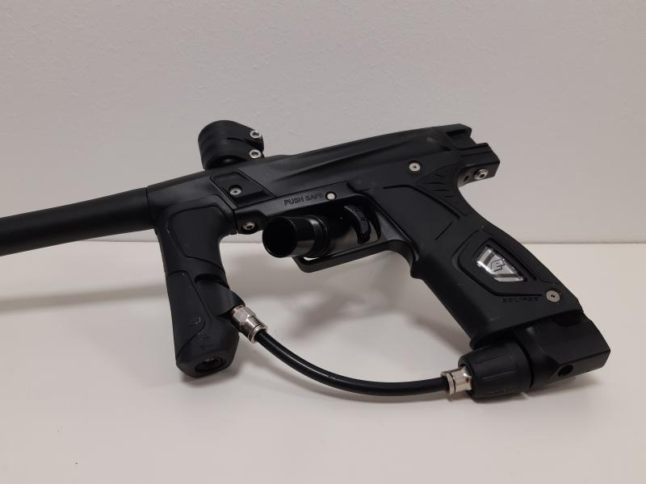
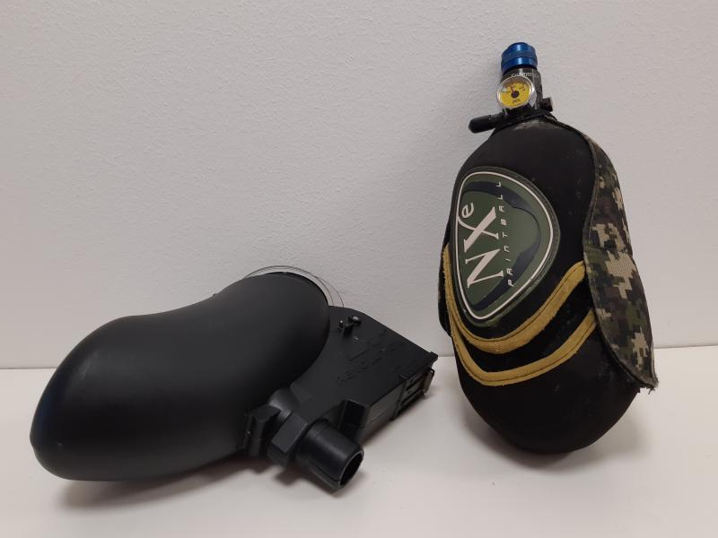
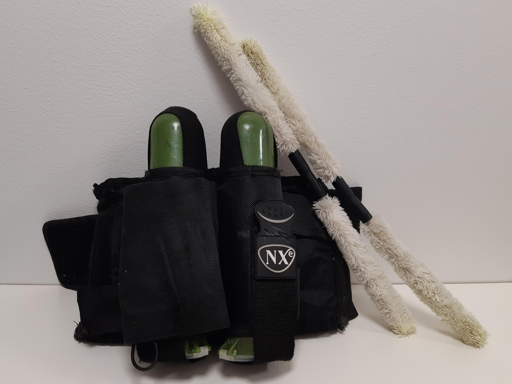

Paintball
Lajiesittely & infosivusto


Turvavarusteet
Paintballin turvavarusteet ovat maski ja piippusukka. Näiden molempien käyttö on täysin pakollista kaikissa tapahtumissa. Maski suojaa pelaajan kasvot osumilta, sen alle jäävät silmien lisäksi nenä, suu sekä korvat. Maskeja on varsin paljon erilaisia ja niiden sopivuus vaihtelee henkilöstä toiseen. Omaa maskia hankkiessa kannattaa pyrkiä sovittamaan niitä päähän alan liikkeissä, koska huonosti istuva maski saattaa pilata koko pelipäivän ja olla vielä lisäksi turvallisuusriski. Kaikki Suomessa myytävät paintball-maskit ovat asianmukaisesti testattu kestämään sellaisen värikuulan osuma, joka on ammuttu sääntöjen mukaisella, enimmillään 300 jalkaa/sekunti, nopeudella.
Piippusukka on väline, joka estää vahinkolaukaukset taukoalueella. Taukoalueella ihmisillä ei yleisesti ole maskeja päässä, joten kuulan lentäminen merkkaimesta pitää estää piippusukan avulla. Piippusukka on pieni pussukka, jossa on kuminauha. Sukka pujotetaan piipun päähän ja kuminauha viritetään merkkaimen takaosaan niin, että sukka pysyy hyvin paikallaan. Sukan ollessa paikoillaan, kaikki paikallaolijat voivat olla huoleti, koska kuulaa ei voi merkkaimesta lentää.
Maski ja piippusukka
Paintball-merkkain
Loaderi eli lipas ja ilmasäiliö
Bulkkivyö bulkkeineen ja piippuputsarit
Merkkaimet
Paintball-merkkaimia on paljon erilaisia. Kilpapelaamisessa käytetään nk. sähkömerkkaimia eli elektropneumaattisia merkkaimia. Näissä merkkaimissa laukaisutapahtuma on elektroniikalla ohjattu. Itse kuulan laukaisemiseen käytetään paineilmaa. Modernit elektropneumaattiset merkkaimet ovat hyvin hiljaisia, luotettavia eivätkä ne "potki" kuten jotkut alkeellisemman tyyppiset merkkaimet.
Harrastepeleissä käytetään merkkaimia laidasta laitaan. Jotkut käyttävät niissäkin kilpapeleistä tuttuja elektropneumaattisia merkkaimia. Varsin yleisiä ovat täysin mekaaniset merkkaimet. Mekaanisissa merkkaimissa tulinopeus on hitaampi kuin sähköisissä, mutta tekniikasta riippuen muitakin eroja on. Magfed-merkkaimet ovat yleensä täysin mekaanisia, mutta eroavaisuutena tavallisiin mekaanisiin merkkaimiin niiden kuulien syöttö tapahtuu piipun alla tai kahvan sisällä olevasta lippaasta, jolloin kuulamäärä on tyypillisesti pienempi. Kolmas merkittävä ja silloin tällöin harrastepeleissä esiintyvä merkkaintyyppi ovat pumppumerkkaimet. Ne ovat niin ikään mekaanisia, mutta edellämainituista poiketen ne eivät ole puoliautomaattisia, vaan pumppumerkkain pitää ladata erikseen piipun ympärillä tai alla olevasta kahvasta ennen jokaista laukausta. Niiden tulinopeus on näin ollen erittäin alhainen ja ne ovatkin yleensä lisää haastetta peliinsä hakevien pelaajien välineitä.
Vuokrattavat paintball-merkkaimet ovat melkein aina mekaanisia. Vuokrakalustoksi valikoituvat yleensä sellaiset mallit, joiden tiedetään olevan erityisen luotettavia ja kovaa käyttöä kestäviä. Myös huoltamisen helppous sekä tietysti hinta korostuu vuokrakalustoa valittaessa.
Paintball-merkkaimeen täytyy liittää myös jonkinlainen voimanlähde ennen kuin sillä voi ampua. Nykyään se on yleisesti paineilma, joka on n. 1 litran tilavuuksisessa alumiini- tai komposiittisäiliössä. Säiliön sisäinen paine voi olla jopa 300bar ja säiliöt pitääkin tietyin väliajoin tarkastuttaa, jotta varmistutaan niiden turvallisuudesta. Aiemmin käytettiin enemmän pullossa nestemäisessä muodossa olevaa hiilidioksidia, mutta se on jäämässä pois, koska paineilma on teknisesti parempi. Hiilidioksidia ei myöskään voi käyttää elektropneumaattisissa merkkaimissa.
Kuulat paintball-merkkaimeen tulevat tyypillisesti sen päällä olevasta lippaasta eli loaderista. Tavallinen lipas, joita esimerkiksi vuokrakalustoissa käytetään, on puhtaasti painovoimalla toimiva. Pallot siis valuvat putkea pitkin merkkaimeen: kun edeltävä pallo ammutaan, seuraava tipahtaa paikalleen. Tämä on kuitenkin ajoittain ongelmallista, koska kuulat voivat jumittua lippaaseen ja sitten lipasta täytyy ravistella, jotta seuraava kuula valuisi alas. Tällainen tavallinen lipas on myös liian hidas, jos käytetään nopeampaan tulinopeuteen pystyvää merkkainta. Tästä syystä markkinoilla on paljon erilaisia sähköisiä lippaita. Teknisiä ratkaisuja on monia erilaisia, mutta pääsääntöisesti sähköiset lippaat ovat osoittautuneet erittäin hyvin toimiviksi ja edellä kuvaillut ongelmat niitä käyttämällä poistuu.
Vaatteet
Paintballia pelatessa voi periaatteessa käyttää minkälaisia vaatteita vain, mutta monet harrastajat käyttävät varta vasten lajia varten kehitettyjä vaatteita. Paintball-housuissa sekä pelipaidoissa on toppauksia kohdissa, joihin osumia yleisimmin tulee. Housujen sivuissa on yleensä toppaus tai paksumpi kangas kilpapeleissä yleistä kentän pinnassa liukumista, nk. slaidaamista, varten. Housuissa saattaa olla myös tietyille tarvikkeille, kuten piippuputsareille, suunniteltuja taskuja. Otsaa ja hiuksia suojaavia nauhoja ja huiveja käytetään yleisesti, kuten myös kaulasuojia. Erityisesti kilpapelaajien käytössä on nk. bounssipaita, joka on varsinaisen pelipaidan alle puettava toppauksilla varustettu tiukka paita.
Paintball-vuokraamot yleensä vuokraavat muiden varusteiden mukana tarvittaessa myös jonkinlaisia haalareita, joka on vaivaton vaihtoehto satunnaiseen pelailuun.
Muut
Paintballiin liittyy paljon muitakin varusteita ja tarvikkeita. Yksi jokaisen harrastajan laukusta löytyvä väline on piippuputsari. Se on tarkoitettu piipun puhdistamiseen sisäpuolelta. Yleisin syy tälle toimenpiteelle on se, että värikuula on hajonnut piipun sisälle. Merkkaimen tarkkuus kärsii erittäin paljon, jos piipussa on värikuulan maalia, joten se on syytä puhdistaa ensi tilassa pois. Bulkkivyö on vyönomainen varuste, jolla on mahdollista kantaa lisäkuulia kentälle. Bulkkivyöhön asetetaan bulkkeja, noin 140 kuulan putkiloita, joista lippaan voi kentällä täyttää.

Kirjoittajasta
Kirjoittaja on aktiivinen paintball-harrastaja ja kiertänyt avoimia harrastetapahtumia vuodesta 2001.